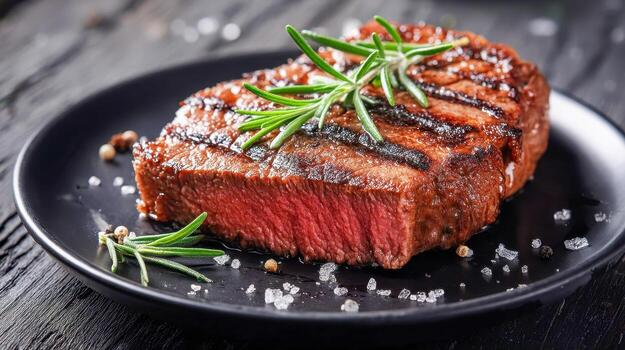

Steak
Home

Description
Steak is delicious and very healthy when prepared properly.
Ingredients
- Olive Oil
- Salt
- Pepper
- Onion Powder
- Garlic Powder
- Mustard Powder
- Italian Seasoning
- Lime Juice
- Top Of Iowa Steak
- Onion
- Mushrooms
Steps
- Place a layer of olive oil into a pre-heated skillet
- While the oil heats up, dice the onion and set it aside
- Add the Steak to the skillet
- Season both sides of the steak with Salt, Pepper, Onion Powder,
Garlic Powder, Mustard Powder, and Italian Seasoning
- Heavily sear each side of the steak
- Remove the steak from the skillet
- Add the onions and mushrooms to the skillet
- Cut the steak into strips
- Continue to cook the onions until they are golden brown
- Add the steak to the skillet
- Add lime juice to the skillet and turn off the heat
- Let sit for 5 minutes
- Serve with roasted potatoes or rice